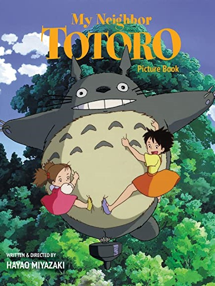
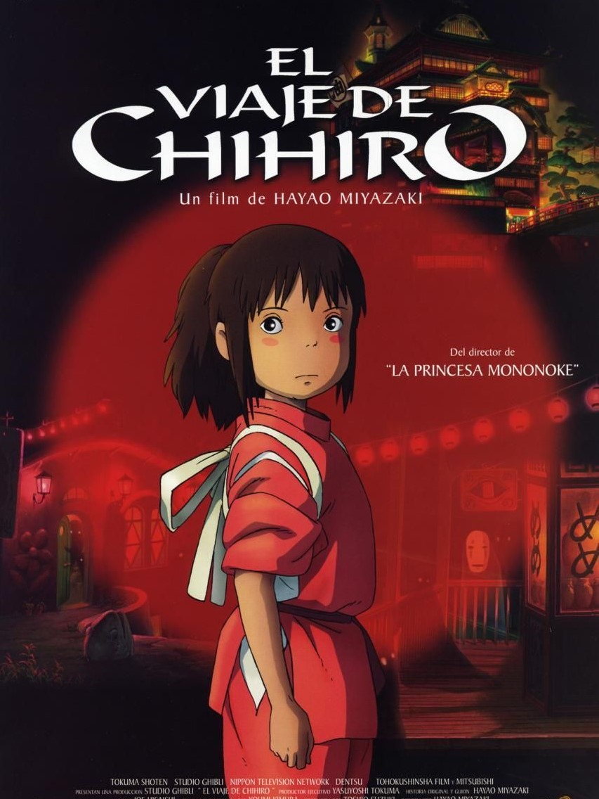
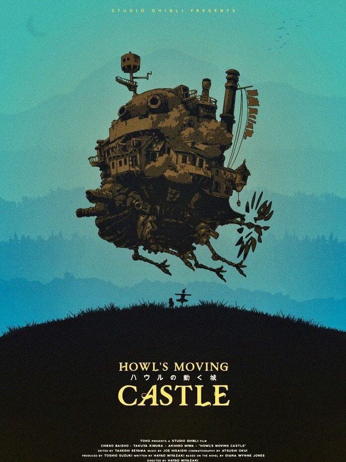
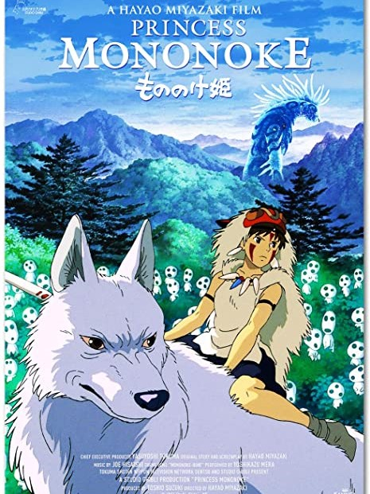
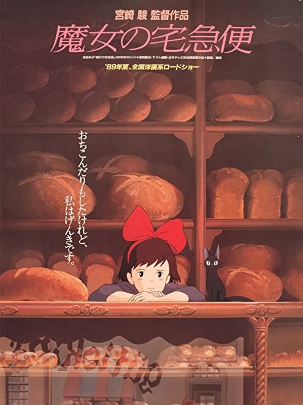
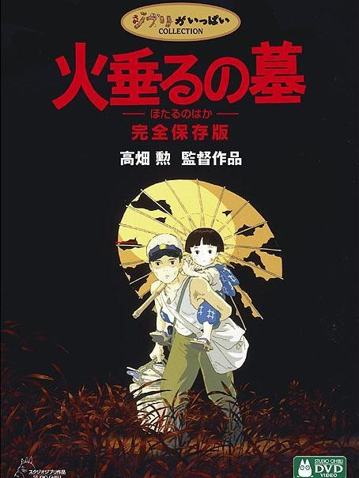

MY NEIGHBOR TOTORO
This acclaimed animated tale by director Hayao Miyazaki follows
schoolgirl Satsuke and her younger sister, Mei, as they settle
into an old country house with their father and wait for their...
(READ MORE)

SPIRITED AWAY
10-year-old Chihiro (Daveigh Chase) moves with her parents to a
new home in the Japanese countryside. After taking a wrong turn
down a wooded path, Chihiro and her parents discover an
amusement...
(READ MORE)

HOWL'S MOVING CASTLE
Sophie (Emily Mortimer) has an uneventful life at her late
father's hat shop, but all that changes when she befriends wizard
Howl (Christian Bale), who lives in a magical flying castle...
(READ MORE)

PRINCESS MONONOKE
A prince becomes involved in the struggle between a forest
princess and the encroachment of mechanization.
(READ MORE)

KIKI'S DELIVERY SERVICE
In this anime feature, 13-year-old Kiki moves to a seaside town
with her talking cat, Jiji, to spend a year alone, in accordance
with her village's tradition for witches in training. After...
(READ MORE)

GRAVE OF THE FIREFLIES
A teenager (J. Robert Spencer) is charged with the care of his
younger sister (Rhoda Chrosite) after an Allied firebombing during
World War II destroys their home and kills their mother.
(READ MORE)